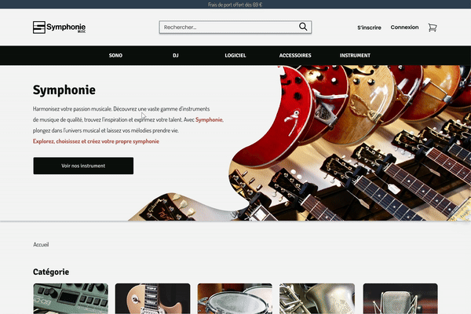
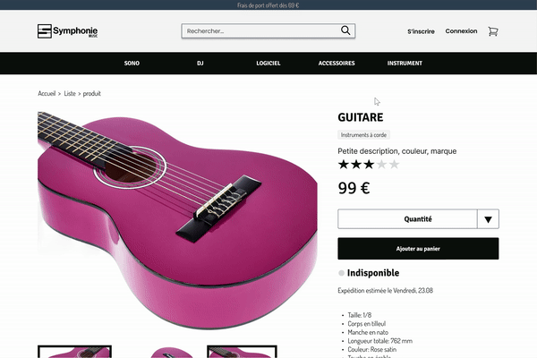
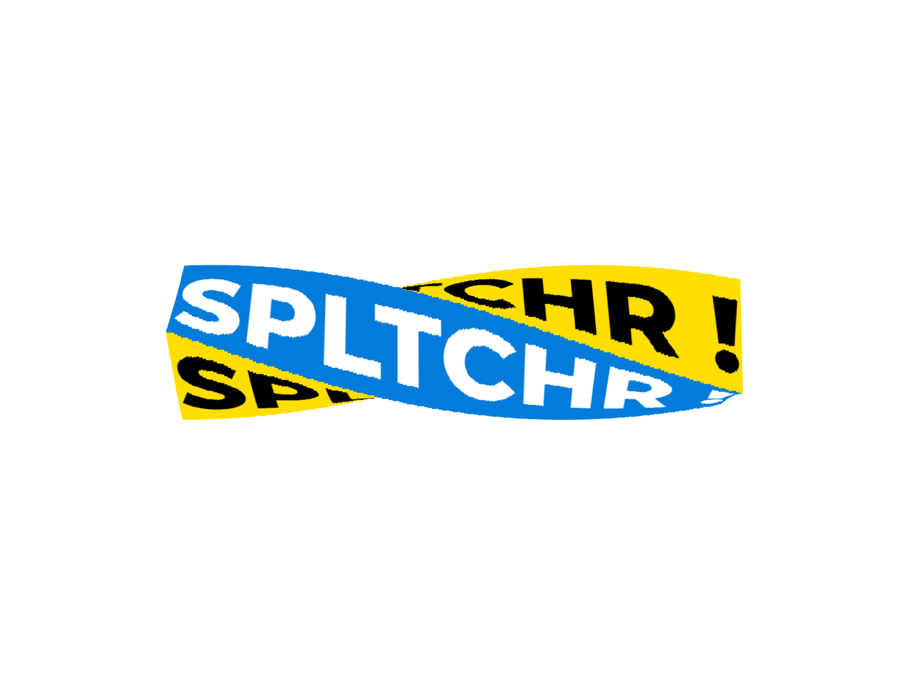
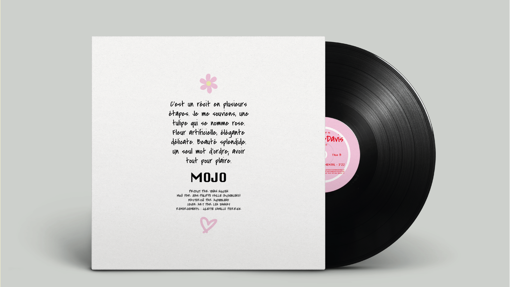
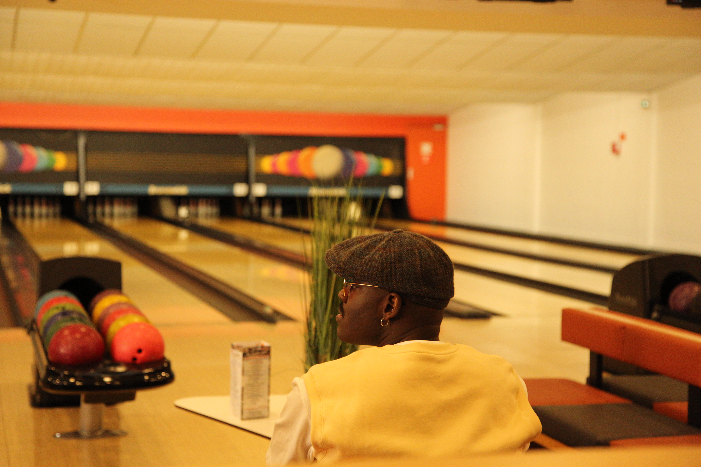
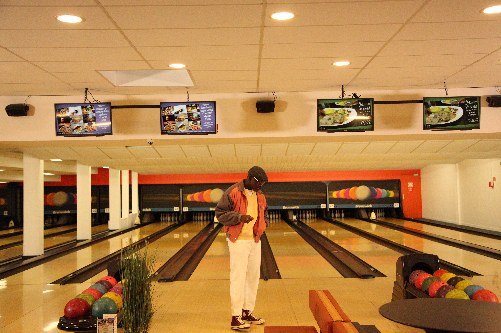
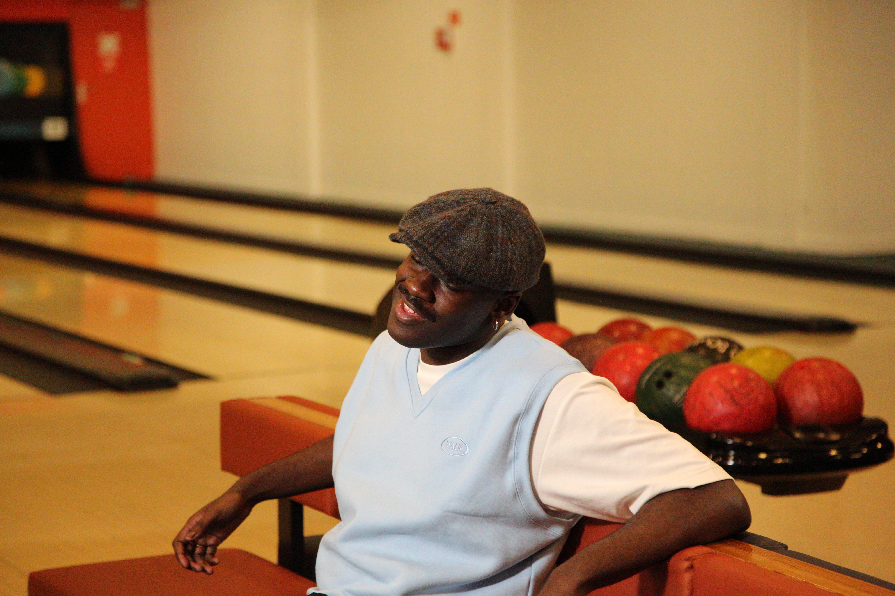
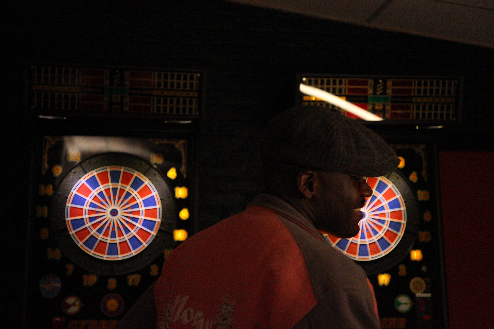
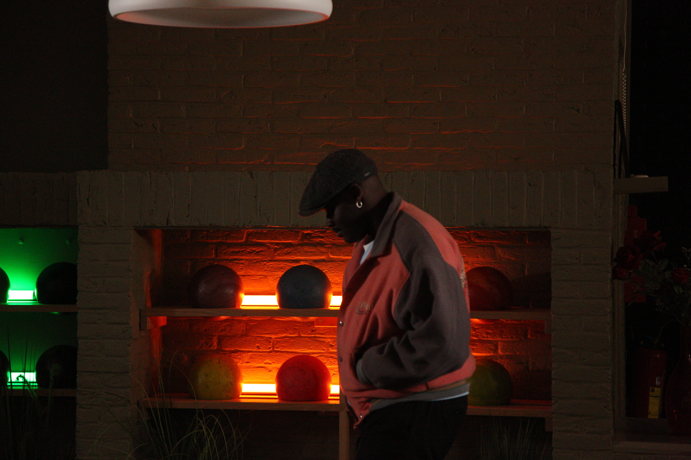
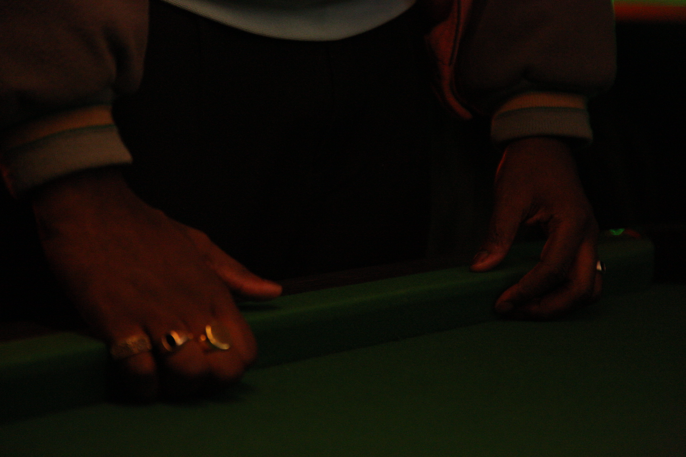

Bonjour, je suis
Yapi Geoffrey-Davis
Concepteur Designer UI (User Interface).
En savoir plus PortfolioÀ propos de moi

Originaire de Lille ; j'explore la vie autour du numérique, de la musique et de la mode. Les réseaux numériques et sociaux ont changé notre vie quotidienne, alors c'est à nous de faire de notre mieux pour gérer notre fil d'information. Concevoir et construire des outils de communication pour mettre en valeur un produit et quelques choses qui me motivent et donnent un rythme à ma vie. Si je devais me décrire en quelques mots, je dirais que je suis un véritable passionné. Qu’il s’agisse de musique ou de numérique, tout ce qui m’entoure suscite ma curiosité. Je crois que c’est surtout ma créativité et ma joie de vivre qui me caractérisent. Je suis également un jeune artiste lillois ; auteur, compositeur et interprète.
Compétences
BAC +4 Concepteur Designer UI - Adapeco / Roubaix
Titre professionnel Concepteur Designer UI (User Interface) Niveau 6.
Formation MS Outils Média Sociaux Et Community Management - AFPA / Roubaix
Module de spécialisation.
Licence de Droit, Economie et Gestion - Université de Lille 1 / Villeneuve-d'Ascq
Mention Economie et Gestion parcours Economie Management Internationaux (EMI).
Baccalauréat (ES) - Lycée Beaupré / Haubourdin
Option Sciences Sociales Politiques et option Art Plastique.
Employé logistique - Nocibé / Villeneuve d'Ascq
Stockage Manutentions diverses
Concepteur Designer UI - Incubateur Numérique, Euratechnologie / Lille
Réalisation d'un site e-commerce spécialisé dans la vente d'instruments de musique. Conception d'un logo et d'une charte graphique. Réalisation d'un wireframe et d'une maquette dynamique du site sur figma.
CEO Multifruits - lemultifruits.fr / Lille
Réalisation d'un site web. Réalisation du cahier des charges. Création d'une charte graphique. Création de support de communication. Réalisation d'une maquette dynamique du site.
Stage Concepteur Designer UI - SPLTCHR.TV / Tourcoing
Réalisation d'un nouveau logo pour le site SPLTCHR TV. Création d'une nouvelle signature mail. Création d'un logo animé. Animation de différents pictogrammes sur le site web.
Community Manager bénévole - Association "The Mooday Club" / Lille
Participation au développement de la stratégie de communication. Gestion des réseaux sociaux; Accroître la visibilité de l'association.
Community Manager en service civique - Mission Locale Métropole Sud / Ronchin
Développer la présence et la visibilité sur les réseaux sociaux. Couvrir des évènements. Garantir l'image et la e-réputation de la structure.
Préparateur de commandes - Vertbaudet / Wambrechies
Picking, Packing, Emballages, Pick and Pack.
Projets réalisés
Carte de visite
Un outil de communication essentiel pour renforcer sa visibilité.
Lors d'une rencontre en face à face, elle s'avère être un moyen efficace
pour partager ses coordonnées et les informations clés sur ses activités professionnelles.
La création et l'élaboration d'une carte de visite permettent ainsi d'optimiser sa communication.
- Date - Octobre 2023
- Logiciels utilisés - Illustrator
- Poste - Designer


Symphonie Music maquette
Symphonie Music est une plateforme de e-commerce dédiée à
la vente d'instruments de musique. Elle s'adresse aussi bien
aux artistes professionnels qu'aux débutants, ainsi qu'aux passionnés
de musique en général. De plus, elle propose une expérience enrichissante
à ceux qui souhaitent découvrir l'univers musical. Le projet visait la
création d'un site e-commerce classique, avec des fonctionnalités comme des
listes de produits, une recherche, des filtres, des fiches produits détaillées,
ainsi que la gestion du panier, du paiement et des commandes.
L'accent a été mis sur l'élaboration d'une maquette moderne et intuitive, avec pour objectif de concevoir une
interface utilisateur claire et accessible, permettant aux visiteurs de trouver
rapidement les informations recherchées.
- - Conception d'une maquette pour toutes les pages,
- - Création d'un design responsive adapté aux appareils mobiles.
- Date - Juillet 2023
- Logiciels utilisés - Illustrator, Figma, Photoshop, Jira
- Poste - Designer


Symphonie Music Logo
Développement d'une identité visuelle pour le projet Symphonie Music,
visant à établir une marque globale et humaine, accessible à tous.
L'élément le plus marquant de ce logo est le carré orné de touches
de piano, symbolisant la lettre S de Symphonie. Ce logo incite chaque visiteur
à explorer les différents produits disponibles sur le site, quel que
soit son niveau de compétence.
- Réalisation d'un logo pour le projet Symphonie Music.
- Date - Juillet 2023
- Logiciels utilisés - Illustrator
- Poste - Designer


le multifruits website
Chaque personne a sa propre vision de la mode,
avec des designs et des types de vêtements qu'elle préfère.
L'objectif est de créer des vêtements dotés d'une histoire unique.
Le projet s'intitule "Multifruits".
Multifruits est une marque de
vêtements lifestyle streetwear avec des accents rétro.
Elle représente également la fusion de plusieurs cultures à travers ses créations.
Création d'un site web pour offrir aux utilisateurs une expérience fluide et agréable.
- Conception de maquette pour toutes les pages du sites,
- Conception du site Web responsive pour une accessibilité optimale pour tous les appareils.
- Date - Septembre 2022
- Logiciels utilisés - Illustrator, Photoshop, Adobe XD, WordPress
- Poste - Concepteur Designer UI
- Voir plus - www.lemultifruits.fr


Logo Multifruits
Des fruits et du style : c'est l'essence de Multifruits.
Multifruits est une marque de streetwear lifestyle avec des accents
rétro/vintage, qui allie le respect de l'humain et de l'environnement.
Elle prône une mode à la fois éthique et éco-responsable, portée par
une passion pour un style conscient et engagé. C'est une marque à la
fois ludique et élégante, qui incarne l'énergie à travers une
communication joyeuse et dynamique.
L'objectif est de mettre en valeur
à la fois les fruits et les textiles dans ses créations.
- Réalisation du logo pour le projet Multifruits.
- Date - Septembre 2022
- Logiciels utilisés - Illustrator
- Poste - Concepteur Designer UI
- Voir plus - www.lemultifruits.fr


Refonte Logo SPLTCHR!
SPLTCHR ! est un lecteur vidéo multi-écran permettant d'intégrer
des effets visuels, des images inédites des tournages, des dates de concerts,
du merchandising ou encore des pochettes d'album. En tant que diviseur d’écran, SPLTCHR !
offre une expérience visuelle unique et immersive. L'objectif principal était de repenser
le logo de SPLTCHR ! pour mieux refléter ses fonctionnalités innovantes.
- Refonte logo et de la charte graphique.
- Date - Juillet 2022
- Logiciels utilisés - Illustrator, After Effects,
- Poste - Concepteur Designer UI
- Voir plus - www.spltchr.tv


MOJO - Tonton Davis Vinyle
Dans un univers où la musique dématérialisée règne,
les disques vinyles ont su préserver leur charme et leur authenticité.
Pour les passionnés de musique et les artistes, créer son propre vinyle est un rêve réalisable.
La pochette du single a été conçue par Léa Dannay (2D artist junior).
L'objectif du projet était de réaliser la pochette arrière et le macaron pour le vinyle du single
"MOJO" de Tonton Davis.
- Date - Septembre 2023
- Logiciels utilisés - Illustrator
- Poste - Concepteur Designer UI


Les Yeux Rouges Cover
- Réalisation de la pochette et d'un visualizer pour le single de l'artiste Tonton Davis, "Les Yeux Rouges".
- Date - Mai 2022
- Logiciels utilisés - Photoshop, Adobe Premiere Pro
- Poste - Concepteur Designer UI
- Voir plus - Tonton Davis - Les Yeux Rouges (visualizer)


Tonton Davis - Pansement
Avec son single "Pansement", Tonton Davis nous plonge dans un hymne à l’amour
le temps d’une chanson. " Pansement " est une fenêtre ouverte sur ses émotions
et ses sentiments amoureux. À travers un univers pop, imprégné de groove,
Tonton Davis nous embarque dans une aventure faite d’amour, de surprises
et de guérison. "Pansement" est disponible sur toutes les plateformes de
streaming ainsi que sur les pistes de bowling.
- Producteur exécutif pour le clip,
- Préparation de la stratégie de communication sur les réseaux sociaux.
- Date - Mars 2022
- Logiciels utilisés - Indesign
- Poste - Producteur exécutif
- Voir plus - Tonton Davis - Pansement clip vidéo





